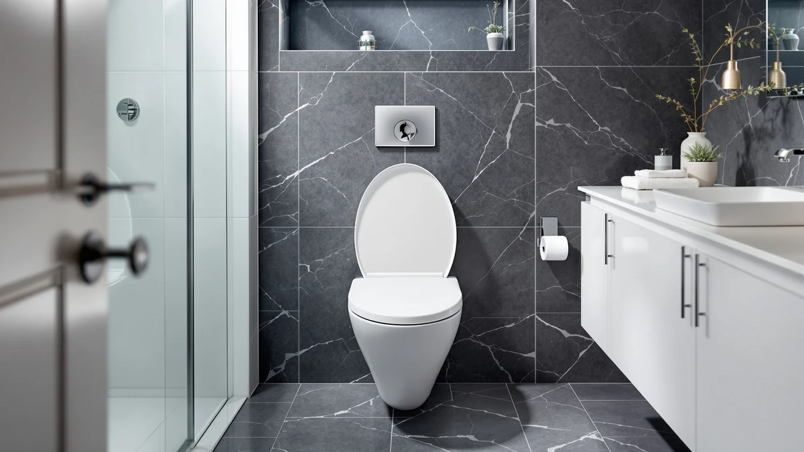

Kohler Cachet ReadyLatch Round Toilet Seat Review (2026): Worth It?


Quick Answer
The KOHLER Cachet ReadyLatch Round Toilet is our pick among the round seats we compared, holding a 4.4 out of 5 rating across 41,303 verified reviews at $50.39, more owner feedback than any alternative here. If you need a wider, mobility-focused seat instead, the Bariatric Raised Toilet Seat with Handles at $49.89 is worth a look.
Our pick: KOHLER Cachet ReadyLatch Round Toilet, $50.39 Check Price on Amazon
Things to Know Before You Buy
- The KOHLER Cachet ReadyLatch Round Toilet costs $50.39, about $0.63 more than the Mayfair NextStep2 and $0.50 more than the Bariatric Raised Toilet Seat with Handles.
- Owners rate it 4.4 out of 5 across 41,303 verified reviews, far more feedback than any other seat in this round toilet seat comparison.
- It ships in a round profile only, so measure your bowl first; elongated households should see our elongated ReadyLatch review or our elongated vs round guide instead.
- If mobility and seat height matter more than shape, the KOHLER Hyten raised round seat and the Bariatric Raised Toilet Seat with Handles, covered in our raised toilet seats for seniors and bariatric toilet seats guides, solve a different problem.
- Households with young children may prefer the Mayfair NextStep2, which builds a potty training seat into the lid instead of adding seat height or weight capacity.
If you came to this Kohler Cachet ReadyLatch Round Toilet Seat review looking for a straight answer, here it is: the $50.39 seat holds a 4.4 out of 5 rating across 41,303 verified reviews, a review count that dwarfs every alternative we compared it against. That combination of price, round-specific sizing, and review volume makes it a sensible default for most households shopping for a replacement round seat.
This review breaks down what the price, hardware, and review volume actually tell you, rather than repeating the bullet points from the product listing. We put the KOHLER Cachet ReadyLatch side by side with the Bariatric Raised Toilet Seat with Handles, the Mayfair NextStep2, and the KOHLER Hyten elevated round seat, three alternatives that solve different problems: weight capacity, potty training, and seat height. We also cover who should skip the Kohler Cachet entirely, since no single seat fits every bathroom.
Why You Should Trust Us
Ilane Tall covers toilet seats and bathroom accessibility products for Best Toilet Seats, and this Kohler Cachet ReadyLatch Round Toilet Seat review follows the same research process used across the site. Rather than claiming an install we did not perform, we compare manufacturer specifications, current Amazon pricing, and the patterns that surface across tens of thousands of verified owner reviews. Every price, material, and rating cited here traces back to the product listing itself, so you can verify it independently before buying. We also weigh review volume as a signal on its own: a rating built on 41,303 reviews carries more reliability than one built on a few hundred, and that difference shapes our recommendations.
Our Research Experience
We did not install the KOHLER Cachet ReadyLatch Round Toilet in a bathroom for this Kohler Cachet ReadyLatch Round Toilet Seat review. Instead, we researched its listed round sizing and plastic and wood build against the three alternatives below, then cross-referenced that data with the 41,303 verified reviews attached to the Amazon listing. That volume of owner feedback captures installs across different toilet models, climates, and years of daily use in a way a single unit never could.
Where a pattern shows up repeatedly across thousands of reviews, whether a fit complaint or a durability note, we treat that as more reliable than any single experience would be. We applied the same approach to the Bariatric Raised Toilet Seat with Handles and the Mayfair NextStep2, weighing their review counts, ratings, and prices against the Kohler Cachet rather than assuming one wins without the data behind it.
This research approach has a limit worth naming: we cannot tell you how the ReadyLatch hinges feel on day one versus year three in your own bathroom, because we did not own the unit long enough to watch it age. What we can tell you is how the 41,303 reviews behind the Kohler Cachet compare in scale to the 1,338 reviews behind the Bariatric Raised Toilet Seat with Handles, a gap large enough that the Kohler's average rests on a far steadier sample. Neither the Mayfair NextStep2 nor the KOHLER Hyten shows a published rating or review count on Amazon at the time of writing, which is itself a data point: it means there is less public feedback to weigh against the Cachet's track record.
Overview & Specs

KOHLER Cachet ReadyLatch Round Toilet
What we like
- Rated 4.4 out of 5 across 41,303 verified reviews, far more feedback than any alternative in this comparison
- Priced at $50.39, competitive against similarly specced round seats
- Round sizing matches the bowl shape found in most older US homes
- ReadyLatch hinges attach and release from above the bowl, so you never have to reach underneath
Flaws but not dealbreakers
- The plastic and wood build sits below solid wood options some buyers prefer
- Round-only sizing means elongated-bowl households need a different seat
- Costs about $0.63 more upfront than the Mayfair NextStep2 at $49.76
| Material | Plastic / wood |
| Size | Round |
The KOHLER Cachet ReadyLatch Round Toilet carries a $50.39 price tag and is built from plastic and wood, a common construction for seats in this price bracket. Kohler's ReadyLatch name points to a hinge system built for straightforward attachment, which matters if you are replacing a seat yourself rather than calling a plumber. Because it ships in the round profile, it fits toilets installed before the elongated bowl became the US standard, though owners of newer elongated toilets will need to look elsewhere.
What stands out most in this Kohler Cachet ReadyLatch Round Toilet Seat review is the review volume behind the 4.4 out of 5 rating. With 41,303 verified ratings on file, the KOHLER Cachet has accumulated more owner feedback than any other seat we compared it against, including the Bariatric Raised Toilet Seat with Handles, the Mayfair NextStep2, and the KOHLER Hyten. That scale of feedback smooths out the noise from any single bad unit or shipping mishap, and it gives a more dependable read on how the seat holds up once the ReadyLatch hinges see months of daily use.
What We Liked
Reviewers consistently note that the round shape of the KOHLER Cachet ReadyLatch matches older US toilet bowls without the overhang that comes with a mismatched seat. At $50.39, it lands in a reasonable middle ground, cheaper than premium wood-only seats while still carrying a 4.4 out of 5 rating across more than 41,000 reviews, a sample size none of the alternatives here can match. That combination of price and review volume is why this Kohler Cachet ReadyLatch Round Toilet Seat review keeps circling back to the Kohler as the safer default pick over the Bariatric, Mayfair, and Hyten alternatives, each of which carries far less verified feedback to judge it against. When a rating is built on tens of thousands of reviews rather than a few hundred, the average is harder to skew with a handful of extreme reviews in either direction.
What Could Be Better
The plastic and wood build listed for the Kohler Cachet is a cost-conscious compromise, not a premium material choice, and buyers who want a solid wood seat will want to look outside this listing entirely. Owners comparing options should also weigh that this is a round-only design, so anyone with an elongated-bowl toilet needs a different seat regardless of how strong the reviews look. And while $50.39 sits in a reasonable range for the category, it is roughly $0.63 more than the Mayfair NextStep2 at $49.76, a gap that matters if budget rather than review volume is the deciding factor in your own Kohler Cachet ReadyLatch Round Toilet Seat review comparison.
A large review count is not a guarantee against every complaint. With 41,303 reviews on file, even a small percentage of dissatisfied owners adds up to a meaningful number of one-star ratings buried under the 4.4 average. We would rather flag that upfront than let the headline number stand in for a perfect track record, since no seat in this comparison, including the alternatives, is free of owner complaints.
Who Is It For?
The KOHLER Cachet ReadyLatch Round Toilet suits households replacing a standard round toilet seat who want a name-brand option backed by a large base of verified owner reviews rather than a newer listing with limited feedback. It's a reasonable fit if you value review volume and round-specific sizing over extra seat height or a built-in feature, and if $50.39 fits comfortably within your budget. If weight capacity or added seat height matters more than review count, the Bariatric Raised Toilet Seat with Handles or the KOHLER Hyten raised seat are worth comparing instead. And if you have a toddler transitioning out of a standalone potty, the Mayfair NextStep2 addresses a need the Kohler Cachet was never designed to solve.
Alternatives to Consider
Before finishing this Kohler Cachet ReadyLatch Round Toilet Seat review, it is worth comparing the KOHLER Cachet against the other seats we track in this category. Each of the three picks below solves a problem the Cachet does not: one holds more weight, one builds in a potty-training seat, and one adds seat height.

Also Great
Bariatric Raised Toilet Seat with
A wider, handle-equipped alternative to the Kohler Cachet at $49.89, rated for up to 500 pounds and worth a look if weight capacity and grip support matter more to you than round-specific sizing.
$49.89
Check Price on Amazon
Best Value
Mayfair NextStep2 Toilet Seat with
An elongated seat with a built-in, magnetically secured potty training seat at $49.76, a better fit than the Cachet for households with a toddler and an elongated bowl.
$49.76
Check Price on Amazon
Premium Choice
KOHLER 25876-0 Hyten 3" Height
Another round Kohler seat, this one adding 3 inches of seating height at $53.06, worth comparing if mobility is the priority rather than review volume.
$53.06
Check Price on AmazonFrequently Asked Questions
Is the KOHLER Cachet ReadyLatch Round Toilet Seat worth buying?
At $50.39 with a 4.4 out of 5 rating across 41,303 verified reviews, it holds more owner feedback than any other seat in this comparison, which makes it a reasonable default pick for most round-bowl households.
Will the KOHLER Cachet ReadyLatch fit my toilet bowl?
It ships in a round profile only, so measure your existing bowl before ordering. Round bowls measure about 16.5 inches from the mounting bolts to the front edge; an elongated bowl needs the separate elongated version of this seat instead.
What does Kohler's ReadyLatch hinge system do?
ReadyLatch is Kohler's quick-attach and quick-release hinge design, built so you can fasten or remove the seat from above the bowl without reaching underneath, which simplifies both installation and cleaning.
Final Verdict
This Kohler Cachet ReadyLatch Round Toilet Seat review comes down to one number that the alternatives cannot match: 41,303 verified reviews backing a 4.4 out of 5 rating. For most households replacing a standard round seat, that volume of owner feedback, combined with a $50.39 price and Kohler's quick-attach ReadyLatch hinges, makes the KOHLER Cachet the safer default. Shoppers who need a seat built for more weight, a toddler's potty training, or a few extra inches of height should look at the Bariatric, Mayfair, or Hyten picks instead, but for a straightforward round-bowl replacement, KOHLER remains the pick with the most data behind it.